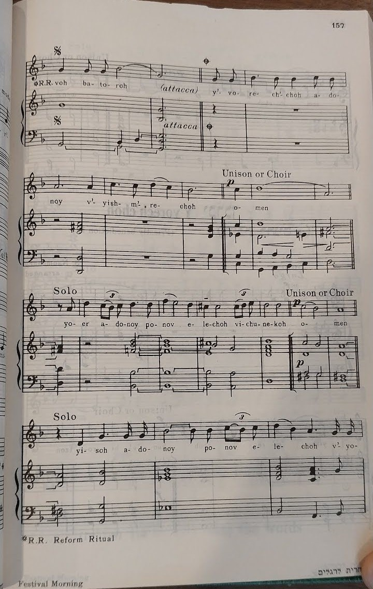
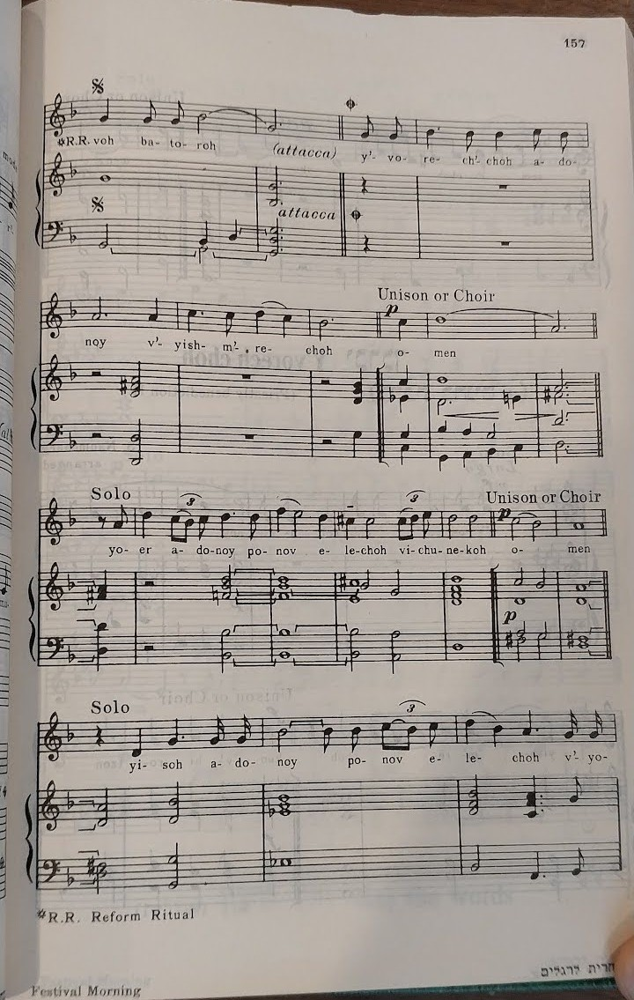
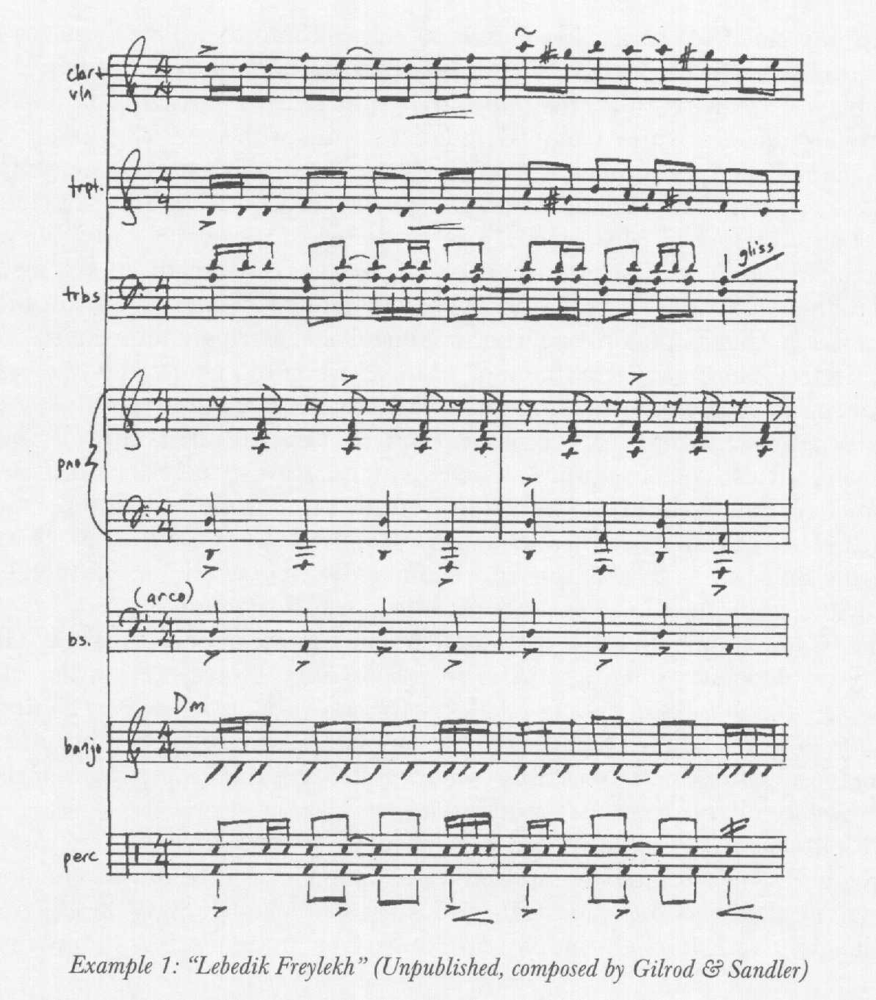
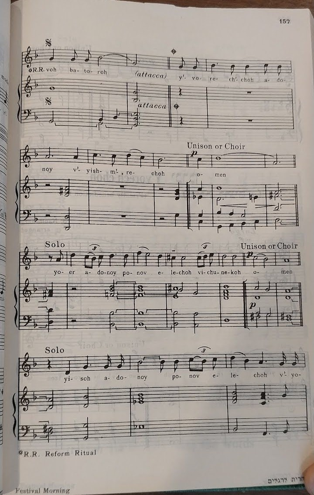
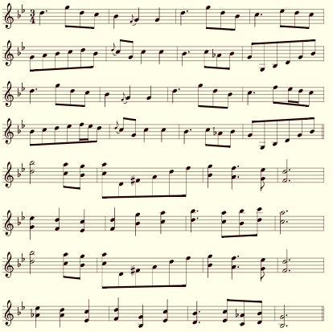

Question de recherche : dans quelle mesure est-ce que l’évolution parallèle de la musique klezmer et de la musique liturgique du judaïsme réforme aux E.-U. illustre la tendance des sous-cultures juives vers l’assimilation ?
« Je suis dans mon endroit le plus saint quand je prie en utilisant la puissance de la musique. Mon expérience est très améliorée quand je suis au milieu de la communauté, comme nos voix remplissent l’air avec des harmonies magnifiques. » —Rob Aronson[1]
L’expérience juive est définie inextricablement par la musique. Depuis des temps bibliques, avec la Chanson de la mer dans l’Exode 15, au présent, avec « Havah Nasirah » (« Chantons »), les Juifs chantent pour rapprocher avec l’un à l’autre et avec Dieu. Mais ces deux chansons sont très différentes de plusieurs façons : que Aronson ait utilisé plus de l’anglais que de l’hébreu aux paroles, qu’il ait inclus des accords pour guitare ou piano avec le chant et même qu’il ait pu noter la musique et la partager avec des personnes qu’il n’avait jamais connu — tel que moi — sont très plus récents que l’histoire de Moïse. Même si ces choses n’étaient possibles pour personne il y a trois mille ans, elles ne seraient encore possibles pour les Juifs si nous ne les avions pas empruntées des cultures environnantes — surtout aux États-Unis — pendant les deux ou trois derniers siècles.
Les Juifs ont commencé à immigrer aux États-Unis de l’Europe centrale aux années 1830, en apportant le judaïsme réforme, qui s’est développé à partir des Lumières.[2] Alors que le mouvement réforme se répandait à travers des États-Unis, il divergeait des pratiques religieuses de l’orthodoxie mais maintenait un style similaire à la musique religieuse, qui restait répandu dans ses synagogues pendant plus d’un siècle. Pendant l’Âge d’or — environ de 1880 à 1924 — beaucoup d’immigrants juifs en plus sont arrivés de partout en Europe et ceux de l’Europe de l’est surtout portaient la musique de leurs communautés hors de la synagogue. C’est la musique qui allait devenir populaire en même temps que la croissance du jazz et devenir connue comme « la musique klezmer » plus tard au XXe siècle.[3]:6
Ces deux formes de la musique — celle de la synagogue réforme et celle du klezmer — existent encore, mais leurs formes modernes seraient presque méconnaissables aux immigrés Européens qui les ont apportées à ce continent pour la première fois. Cette dissertation explore comment ceci s’est passé en répondant à la question, dans quelle mesure est-ce que l’évolution parallèle de la musique klezmer et de la musique liturgique du judaïsme réforme aux E.-U. illustre la tendance des sous-cultures juives vers l’assimilation ?
Le mot yiddish klezmer vient de la phrase hébreu k’lei-zemer qui veut dire littéralement « réceptacles du chant ». C’était utilisé communément à l’Europe de l’est pour signifier un musicien, d’habitude l’un qui jouait la musique dansante traditionnelle aux noces et aux autres événements festifs.[4] Klezmorim (le pluriel de klezmer) se sont employés souvent à la fin du XVIIIe siècle et au XIXe siècle par les congrégations hassidiques comme ce mouvement croissait à travers la région, surtout pour améliorer leurs danses et leurs nigunim (mélodies sans mots).[3]:6 Ceci a eu de l’influence durable sur le style de la musique que les klezmorim ont développée, actuellement aussi connu comme « klezmer » : « le répertoire du klezmer de l’Europe de l’est comprenait considérablement des mélodies d’une origine hassidique à l’évidence … et jusqu’à récemment les musiciens du klezmer … avaient peu de raisons de différencier entre la matière hassidique et les autres parties du répertoire. »[5]:207–208 Ceci a été augmenté par les styles traditionnels des autres sphères juives : « des ornements typiques du klezmer se trouvent aussi dans des autres formes de l’expression musicale juive y compris la musique du chantre et la musique folklorique. Le parallèle aux chantres est évident dans la forme et le phrasé des improvisations instrumentales. »[3]:6
Entre 1881 et 1924, plus de 2,5 millions de Juifs ont immigré de l’Europe de l’est aux E.-U.,[6] en apportant avec eux leurs pratiques religieuses — de manière écrasante hassidiques, avec une minorité qui suivait des autres branches de l’orthodoxie — et leur musique. Les klezmorim parmi eux « ont recréé les sons des villes de l’Europe de l’est à ce côté de l’océan, » en utilisant des éléments musicaux des cultures dans toute cette région et des instruments courants du klezmer tel que le tsimbl, l’accordéon et le trombone à pistons.[3]:6 À la fin de cette période, pourtant, il y a eu des séparations distinctes de la tradition pour de la musique plus « moderne » et locale.
La figure 1 montre le carrefour du klezmer de l’Europe de l’est et le jazz des années 1920. Enregistré en 1927 par l’orchestre de Abe Schwartz, « Lebedik un Freylekh » ajoute à une instrumentation distinctement américaine — cuivres, piano, banjo et batterie — la clarinette, le violon et le trombone à pistons du klezmer.[3]:6
figure 1 : « Lebedik un Freylekh » comme enregistré par Abe Schwartz[3]:7
Alors que les accords sous ces deux mesures sont ré-mineur, comme indiqué à la partie du banjo, la présence de si ♮ et sol ♯ dans la mélodie met la chanson en ré mineur double-harmonique, aussi parfois connu comme la gamme tzigane mineure,[7] lui donnant une touche qui pourrait être décrite comme « Orientale » et qui rappelle les origines à l’Europe de l’est de la musique klezmer. En même temps, elle a un ton du jazz américain à cause des instruments inclus qui n’étaient jamais utilisés dans cette musique de l’Europe de l’est. Elle a été créée pour les Juifs qui étaient venus aux E.-U., qui étaient familiers avec les mélodies du klezmer, mais qui voulaient écouter quelque chose qui reflétait leur expérience en tant qu’immigrants — en tant qu’américains.
La figure 2 montre le même effet d’une perspective différente. « Nokh a Bisl » (« Encore un peu ») est une chanson traditionnelle du klezmer. Con Conrad et J. Russel Robinson ont pris la mélodie et l’ont transformée au jazz dont ils avaient l’habitude avec « Lena from Palesteena » (1920).[3]:8
figure 2 : « Nokh a Bisl » et « Lena from Palesteena »[3]:8

Les deux de celles-ci sont aussi en ré mineur double-harmonique. Dans « Palesteena », les variations sont devenues des triolets pour se conformer au style populaire de swing ; la deuxième moitié s’est changée d’une extension naturelle de l’ouverture en contre-mélodie chargée et syncopée, avec des fa ♯ et des do ♯ pour lui donner une touche de majeure. Le but ici pourrait ne pas avoir été de plaire à une audience juive mais de toucher les audiences grand public avec un nouveau son, en faisant le ménage dans cette musique « étrangère » pour la rendre plus acceptable.
En même temps, la musique qui avait engendré le klezmer des centaines d’années plus tôt demeurait dans une forme beaucoup plus traditionnelle, dans la synagogue. Bien que la musique soit présente dans la liturgie depuis la période du Premier temple, vers les VIe et VIIe siècles av. J.-C., à la Diaspora (les Juifs qui habitent hors d’Israël) cette musique a évolué avec le temps en fonction de la musique qu’ils écoutaient autour d’eux. L’Encyclopédie juive donne, « La musique a pu préserver quelques phrases dans la lecture des Saintes Écritures qui ont rappelé le chant du Temple … mais en général elle a évoqué dès le début les tons que le Juif de chaque âge et chaque région écoutait autour de lui, non seulement dans le vrai emprunt des mélodies … mais plus particulièrement dans la tonalité ou la description de gamme dominantes sur laquelle la musique était fondée. »[8]:120 Elle donne l’exemple, montré dans la figure 3, d’un extrait de la liturgie du soir des jours de semaine, la fin de la prière de « Rédemption ». Ce segment ne contient aucune septième, donc son échelle n’est pas complètement définie, mais elle commence dans l’échelle lydienne — avec la quatrième élevée, si ♮ — mais la change en quatrième normale, revenant à l’échelle majeure pour la fin de la bénédiction.
figure 3 : extrait de l’office du soir des jours de semaine[8]:124

À ce moment-là, la musique de la synagogue des E.-U. était beaucoup un style renferme comparé à la musique autour d’elle ; tandis que ce motif de lydien/majeur peut être survenu de plusieurs sources possibles au passé, la musique contemporaine ne l’utilisait pas du tout, mais cela n’a déjà affecté l’œuvre juive.
Avant de sa mort en 1938, Abraham Zevi Idelsohn a concocté un Jewish Song Book for Synagogue, School and Home (Recueil de chants juifs pour la synagogue, l’école et la maison), qui inclut les partitions pour presque toutes les chansons qui étaient populaires dans la tradition ashkénaze à l’époque et la liturgie de chaque office de l’année. La figure 4 montre un extrait du livre, les deux versions de la Bénédiction de prêtre dans la partie pour les Trois fêtes. Les parties « Solo » étaient chantées par le chantre, tandis que les parties « Unison or Choir » (unisson ou chœur) sont des affirmations des bénédictions que le chantre donne.
figure 4 : Bénédictions de prêtre du Recueil des chants juifs de Idelsohn[9]:156–159

Dans la première de ces chansons, l’armature avec un bémol semble impliquer que ce soit en ré mineur. Le centre tonal tout au long des parties solo, pourtant, est sol et la présence de mi ♭, fa ♯, et le do ♯ occasionnel dans les accords implique une gamme de sol mineur harmonique ou double-harmonique ; cependant, les parties à l’unisson favorisent les accords de ré-majeur, bien qu’il y ait aussi des éléments de ré mineur. La deuxième mélodie est plus invariablement en la ♭ majeur, comme l’armature impliquerait, avec quelques mi ♮ — qui implique le ton de fa mineur harmonique — et s’aventure en do mineur harmonique, avec ré ♮ et si ♮, pour la deuxième partie à l’unisson. L’utilisation des échelles mineures-harmoniques et les variations entre mineure et majeure évoquent la musique traditionnelle des Juifs de l’Europe de l’est, qui a pris des éléments de la musique de la région et son son « Oriental » avant qu’elle ne soit arrivée aux E.-U.
Après sa popularité dans les années 1930, la musique klezmer a connu un déclin d’appréciation du public aux E.-U. à cause de la destruction des communautés juives en Europe pendant l’Holocauste et de la création de l’état d’Israël en 1948.
« En 1977, Nat Hentoff a commenté que “Depuis des années, je pense que les klezmorim soient presque éteints. Oh, quelques vieux joueurs doivent encore geindre dans quelques quartiers des Juifs orthodoxes qui diminuent, mais sûrement ils sont les derniers de leur lignée.” Quand il les a écoutés, il “fermait les yeux et souriait aux fantômes de mon clan à Minsk et Pinsk.” Maintenant, il a continué, une nouvelle génération “s’est mise à et a gaiement revivifié cet héritage.” »[10]:49
La « nouvelle génération » a créé un mouvement qui est devenu connu comme le « retour du klezmer ». « Ses origines à la fin des années 70 peuvent se trouver à la confluence des plus grands mouvements américains de “racines” et de la musique folk, “la musique folk” étant le domaine musical de la scène alternative de la jeunesse à cette époque. Les musiciens qui ont initié le retour du klezmer dans une large mesure avaient commencé en jouant la musique bluegrass, la musique vieille et des autres genres traditionnels de la musique américaine, et ils ont sauté sur l’occasion d’avoir leur propre musique folk. »[11]:45 Parmi ceux étaient des « jeunes musiciens juifs … qui posaient des questions sur leur ascendance musicale », qui ont été « remplis avec l’esthétique de l’expression-de-soi des années 1960 » et qui jouaient « les styles musicaux bruts de blues, bluegrass, vieux swing, jazz, folk et soul ».[3]:10 Comme ils développaient leur propre musique du « nouveau klezmer », ils se sont inspirés de ces autres styles qu’ils avaient déjà appris et avec cette musique ils ont créé un style folk qui n’avait jamais été vu dans le genre du klezmer.
L’un de ces musiciens était le mandoliniste et clarinettiste Andy Statman, qui a puisé dans son expérience avec le bluegrass pour créer du klezmer avec la guitare comme base rythmique, un nouvel élément dans le klezmer. La figure 5 montre un extrait de l’une de ses chansons de cette époque, « Flatbush Waltz » (« La valse du plat-buisson », 1980).
figure 5 : « Flatbush Waltz » par Andy Statman[12]
Même si l’instrumentation est novatrice, les éléments musicaux de cette mélodie ne sont rien de nouveau — l’ornementation des rythmes est un élément courant du klezmer précédent et, du centre tonal de sol, la mélodie occupe une variété d’échelles mineures, y compris celle sémitique, la mineure harmonique, avec les altérations à fa ♯ et la ♭ en plus de fa ♮ et la ♮.[7] Le mouvement du « retour » dont il en faisait partie cherchait à rétablir la popularité de cette musique en la remettant en public et la faisant ressembler à la musique courante de l’époque, sans changer ses aspects fondamentaux. En même temps, la fusion des styles dans cette période était un relativement nouveau concept dans la musique dans l’ensemble, facilité par une possibilité de partager la musique à travers le monde d’une manière dont on n’avait pas pu quelques décennies plus tôt, mais satisfaisait au klezmer qui avait émergé aux E.-U.
Associés avec les mouvements dans la musique qui a mené au retour du klezmer à la fin des années 1970, il y a eu des mouvements correspondants dans l’identité culturelle américaine-juive. Alicia Svigals les définit en trois groupes — « celui qui jette la culture et garde la religion, celui qui jette la religion et garde la culture et celui qui épouse les deux sans recul critique », ceux qu’elle appelle le Renouveau juif, le Yiddishisme et le Ba’al T’shuvah (littéralement « maître de retour »), respectivement. Elle écrit, « Les premiers deux se composent des Juifs qui s’identifient avec la gauche progressiste. Ce sont des gens qui cherchent une façon d’être juifs qui est en accord avec leurs valeurs féministes, gay-positives et autrement de la nouvelle-gauche et qui se débarrasse avec les restrictions sociales du passé : c’est-à-dire, une façon d’être juifs en restant eux-mêmes. » Ces idéologies ont résulté des confessions réforme et reconstructionniste mais ont reflété un changement politique qui n’avait déjà été vu dans la synagogue.[11]:44
Le mouvement du Renouveau juif en particulier puise dans la philosophie « nouvelle-gauche », avec l’auteur-compositeur-interprète éminente Debbie Friedman qui a reconsidéré des textes religieux au vu d’une nouvelle mentalité. Elle a pris le Kaddish des endeuillés — comme le nom insinue, une prière pour les morts — et a choisi « d’interpréter cette prière comme elle s’écrit — comme affirmation de la vie et glorification du nom du Dieu. »[13]:271 Dans « Mi Shebeirach » (1989), montrée dans la figure 6, elle a modifié la liturgie « pour refléter une sensibilité féministe », en incluant à la fois avoteinu (nos pères) et imoteinu (nos mères) comme manière de démontrer que ni Dieu ni les gens n’entrent bien dans une seule catégorie du genre.[11]:45
figure 6 : « Mi Shebeirach » par Debbie Friedman[14]

Disparus les altérations et les ornements qui donneraient un son unique à la mélodie, ainsi que toute supposition de rôles dans la synagogue qui seraient importants pour cette chanson. Plutôt, Friedman écrit une mélodie simple en la majeur, avec la notation des accords pour un accompagnement de guitare ou de piano, comme la musique rock ou folk de l’époque ; plus d’importance est mise sur les paroles, en mélangeant l’hébreu et l’anglais pour rendre le message plus accessible, donc la chanson devient moyen pour l’émotion et la connexion personnelle. En général, Svigals écrit, ses paroles ont été mises en « belles mélodies spirituelles qui en grande partie puisent dans un vocabulaire de la musique américaine populaire ».[11]:45 Son vieil ami Jeff Klepper décrit certaines de ses chansons comme « à un style de blues-jazz plus associé à des chanteurs comme Billie Holliday »[13]:272 ou « démodées, comme des scènes coupées de la comédie musicale Hair ».[13]:270 De plus en plus, à cause des musiciens comme Friedman (et Klepper), la musique de la synagogue réforme devenait moins comme le style dont Idelsohn fait la chronique, avec un chantre virtuose et un chœur complet, et plus comme les performances de folk qui étaient très populaires au-delà de la synagogue.
La musique de Debbie Friedman est encore incroyablement populaire à travers le mouvement réforme aux E.-U., avec certaines de ses chansons (dont « Mi Shebeirach ») devenant si connues que beaucoup en pensent comme traditionnelles. À ma synagogue, nous continuons la même tendance à apporter la musique traditionnelle dans un contexte moderne avec la musique de Friedman, Klepper, Dan Nichols, Craig Taubman et plus. Nous avons des offices mensuels où des arrangements originaux de cette musique sont joués par le groupe des adolescents, qui a l’air d’un ensemble de chambre d’un lycée, introduisant des éléments de la musique occidentale-classique contemporaine ; annuellement, le vendredi avant la Journée MLK, notre musique juive réforme est mélangée avec la musique gospel du chœur d’une église des Noirs, renforçant les valeurs de la rédemption et la justice dont nous chantons et prions très souvent tous seuls. Tout ceci est symbolique de l’intégration de la communauté juive dans la culture grand public mais simultanément représente une résistance puissante contre l’assimilation complète alors que nous continuons à célébrer nos idées et croyances uniques.
« “Je sais pas comment on l’appelle, mais c’est pas le klezmer.” Si j’avais un dollar pour chaque fois que je suis sorti d’un concert de Brave Old World ou Golem et j’ai entendu par hasard que quelqu’un le disait, je serais, comme dit le proverbe, un homme riche. Je suis désolé de vous décevoir, mais oui, c’est le klezmer. Et non seulement c’est le klezmer, mais cela fait également partie intégrante de la tradition du klezmer ; en fait, c’est le klezmer traditionnel, parce que le klezmer parlait toujours l’idiome de son époque. »[15]
Le message de Seth Rogovoy, en l’écrivant, est que le genre continue à évoluer ; le retour dans les années 1970 ne s’est jamais vraiment terminé, dans le sens que klezmer continue à s’intégrer dans la scène de la musique autour de lui. Il s’inspire plus du présent que de son propre présent, donc il ne ressemble pas à la musique qui était jouée il y a cinquante ans. Plutôt, le titre de son article précise, « le rock, le jazz, le punk, le hip-hop et la techno apportent de nouveaux sons à la mélange juive ».[15] Rogovoy poursuit en affirmant « qu’il n’y a pas de “musique klezmer” du tout » parce qu’elle est tant définie par la culture musicale qui l’entoure. « Le besoin de définir le klezmer … est … complètement inutile. Bien mieux de suivre la tradition et adopter une plus large approche, comme les musiciens [juifs de l’Europe de l’est] souvent, en incorporant des influences “co-territoriales” et “cosmopolites” dans leur musique. »[15]
David Krakauer est l’un des musiciens éminents dans ce mouvement, joignant son son de la clarinette du vieux klezmer avec des styles modernes du rock, du jazz et du hip-hop. Cette influence est démontrée à « Der Heyser Bulgar » (v. 2009), dont le début est montré dans la figure 7.
figure 7 : « Der Heyser Bulgar » par David Krakauer[16]

Krakauer utilise considérablement les altérations mineures ; même si la chanson est écrite en ré majeur, l’utilisation des ♭2, ♭6, et ♭7 met la mélodie à l’échelle phrygienne-dominante (ou harmonique-dominante).[7] En même temps, la mélodie inclut fréquemment la ♯, ainsi que la ♮, faisant allusion à l’échelle mineure double-harmonique et donc les origines à l’Europe de l’est du klezmer. Tandis que les étouffements et les trilles sont ordinaires en tant qu’ornementations dans le klezmer, certains de ces mêmes éléments, ainsi que les rythmes de triolet, font des parallèles avec le jazz contemporain.
Avec des artistes tels que Krakauer à sa clarinette, Frank London et Kaia Berman-Peters (sous le nom de Chaia) qui jouent le klezmer électronique et les Shvesters (yiddish pour sœurs) qui chantent des classiques de l’âge du jazz, le klezmer moderne est défini par son manque de définition, avec chaque musicien et chaque musicologue ayant des idées différentes de ce qu’il est et de ce qu’il devrait être.[15] [17] C’est le jazz, c’est le blues, c’est le punk, c’est la techno, c’est l’électro et c’est le folk ; « Andy Statman peut prendre sa mandoline et vous convaincre que le bluegrass a été transmis aux Israélites au Mont Sinaï … le pianiste Anthony Coleman peut jouer “Mayn Shtetele Belz” et vous convaincre que le Buena Vista Social Club de la Havane est le groupe en résidence de l’un des Dix tribus perdues. »[15] Le style unique de chacun de ces musiciens est soutenu par la communauté qui entoure son genre principal — que ce soit le klezmer ou non — et renforcé par l’audience qui cherche spécifiquement de la musique dont ils peuvent s’y identifier en tant que Juifs ou amateurs de la musique juive.
Cette question sous-tend cette exploration entière et les Juifs comme les non-Juifs cherchent à la résoudre depuis plus de cent ans. Curt Sachs l’a définie comme « la musique faite par les Juifs, pour les Juifs, en tant que Juifs » ; Alexander Knapp y riposte en demandant, « Est-ce que cette déclaration implique que quelque chose composée pas par les Juifs, pas pour les Juifs, pas en tant que Juifs, ne serait, ipso facto, pas la musique juive ? » et puis se met à donner plusieurs exemples des chansons qui, à un lecteur ordinaire, décidément appartiennent à la catégorie de « la musique juive » mais qui ne satisfont pas tous les critères de Sachs.[18]:565 Cyrus Adler et Francis Cohen dans l’Encyclopédie juive et Abraham Idelsohn dans le Recueil des chants juifs ont tenté de classer la musique de leurs époques en collectionnant les mélodies et les motifs et les deux ont créé des produits qui sont difficiles à lire ou à utiliser à cause de la quantité pure qu’ils ont essayée de condenser en taille raisonnable.[8] [9]
Plusieurs savants, dont Knapp n’est pas le moins, affirment que la question est futile. Dans un méta-article au sujet, Mark Slobin écrit, « Le mirage de la musique juive s’évapore alors qu’on le regarde, remplacé par la vue des Juifs qui chantent quoi qu’ils veuillent, de n’importe quelle source locale. »[19]:222 Dans des autres articles, Charles Hersch et Lloica Czackis ont examiné les genres de « jazz juif »[20] et « tango yiddish »,[21] et Jonathan Magonet a traité de l’influence des chansons écrites par les Juifs sur la culture populaire.[22] Il y a aussi quelque chose à dire de l’idée de la notation : la musique traditionnelle n’était jamais notée, mais de nos jours toute la musique qu’on joue est transcrite — dans un système qui vient de l’Europe de l’ouest, qui n’est pas l’origine de la majorité de la culture — et même dès le début du XXe siècle, il y avait un besoin perçu de la noter, comme attesté par les images près du début de cette rédaction. La musique juive dans l’ensemble n’existe pas en elle-même mais est définie par ses environs, en tant que « la musique d’un peuple extraordinairement mobile, vastement dispersé et fréquemment persécuté qui ne peuvent pas facilement être défini par “patrie,” “race,” “ethnicité,” “nationalité” ou “religion.” »[19]:224
« La musique rituelle est une expérience extrêmement sensuelle qui touche les gens d’une façon que les mots ne peuvent pas. La musique convertit l’ordinaire en miraculeux et les individus en communauté de prière. Et la musique permet aux Juifs excessivement intellectuels de laisser reposer leurs esprits et d’ouvrir leurs cœurs. » —Eric Yoffie[23]
Ce mémoire a traversé les 120 dernières années de la musique juive et adjacente aux Juifs aux E.-U., arrêtant pour réfléchir aux moments principaux dans l’évolution de la musique klezmer et liturgique réforme. Le klezmer « est venu du bateau » d’Europe et s’est trouvé entouré d’une culture du jazz qui croissait rapidement, qui l’a apporté dans le regard du public pendant une décennie ; a ressurgi dans les années 1970 à cause de changements de la culture dans les musiques folk et soul ; et conserve une sorte de culte jusqu’à maintenant en tant que représentation de la musique jazz-folk juive (ou inspirée par les Juifs). Pendant ce temps, la musique de la synagogue réforme se séparait de ses origines unies avec celles de la synagogue orthodoxe comme elle se détachait du langage démodé, assumait les styles et les pratiques des genres laïcs et commençait à donner la priorité aux associations idéologiques plutôt qu’au particularisme religieux. Tout cela est entièrement conforme à ce que la communauté juive aux E.-U. dans l’ensemble faisait pendant la même période, en passant d’une seule culture qui ressemblait à peu près aux Juifs orthodoxes-modernes de nos jours à un groupe de sous-cultures aussi diverse que le reste du pays qui les entourait.
C’est cette diversification — et, dans ce cas, laïcisation — qui définit la tendance de l’assimilation. Même s’il y avait des différences nuancées entre les parties différentes de la communauté juive au début du XXe siècle, à quelqu’un qui passait toute sa vie dans le courant dominant contemporain, elle semblait être unifiée — « les Juifs ». Or, aucune culture n’est parfaitement homogène, donc afin de s’intégrer les Juifs ont dû se diviser en leurs propres sous-cultures qui reflétaient celles de la culture dominante, tout en lâchant les choses qui les rendaient les plus uniques parce qu’elles en auraient aussi fait des cibles pour la persécution. Par conséquent, de nos jours, il reste une communauté qui, tandis qu’elle garde indubitablement quelques caractéristiques principales et qu’elle fait face à la persécution et la discrimination, s’est integrée à l’Amérique grand public assez bien que la personne moyenne ne peut pas nous distinguer. Le judaïsme est, comme d’habitude, une curiosité intéressante — avec une langue et une histoire qui se démarquent — mais par ailleurs invisible.
[Toutes les sources sont originellement en anglais ; les titres sont traduits en français ici.]
↑ 1. Rob Aronson, « Havah Nashirah » dans Ruach 5779
↑ 2. « Reform Judaism: History &
Overview » de Jewish Virtual Library,
jewishvirtuallibrary.org/
a b c d e f g h i 3. Hankus Netsky, « An Overview of Klezmer Music and its Development in the U.S., » dans Judaism cahier 47 tome 1, proquest:200408799 [« Un aperçu de la musique klezmer et son développement aux E.-U. » dans la revue Judaïsme]
↑ 4. Giora Feidman, « Giora Feidman, »
giorafeidman-online.com/
↑ 5. Abigail Wood, « Stepping across the Divide: Hasidic
Music in Today’s Yiddish Canon, » dans Ethnomusicology cahier 51 tome 2,
doi:10.2307/
↑ 6. « A Century of Immigration, 1880-1924, »
dans From Haven to Home: 350 Years of Jewish Life in America, Library of Congress,
loc.gov/
a b c 7. « List of musical scales and modes, » sur Wikipedia,
en.wikipedia.org/
a b c 8. Cyrus Adler et Francis L. Cohen, « Music, Synagogal, » dans
Jewish Encyclopedia (Isidore Singer, éditeur) tome 9, disponible à
jewishencyclopedia.com/
a b 9. Abraham Z. Idelsohn, The Jewish Song Book for Synagogue, School, and Home (Baruch Joseph Cohon et A. Irma Cohon, éditeurs) [Le recueil des chants juifs pour la synagogue, l’école et la maison]
↑ 10. Barbara Kirshenblatt-Gimblett, « Sounds of Sensibility, » dans Judaism cahier 47 tome 1, proquest:200399383 [« Les sons de la sensibilité » dans la revue Judaïsme]
a b c d 11. Alicia Svigals, « Why We Do this Anyway: Klezmer as Jewish Youth Subculture, » dans Judaism cahier 47 tome 1, proquest:200395127 [« Pourquoi nous faisons cela quand même : le klezmer en tant que sous-culture des jeunes juifs » dans la revue Judaïsme]
↑ 12. Andy Statman, « Flatbush Waltz, » sur
The Session, thesession.org/
a b c 13. Jeff Klepper, « Visions of Debbie Friedman, » dans Musica Judaica cahier 20, jstor:26454589 [« Les visions de Debbie Friedman » dans la revue Musica Judaica]
↑ 14. Debbie Friedman et Drorah Setel, « Mi
Shebeirach, » sur Sheet Music Direct,
sheetmusicdirect.com/…/
a b c d e 15. Seth Rogovoy, « But is it Klezmer? Rock, Jazz, Punk, Hip-hop, and
Techno Bring New Sounds to the Jewish Mix, » dans PaknTreger,
yiddishbookcenter.org/
↑ 16. David Krakauer et Kathleen Tagg, « Der Heyser
Bulgar, »
davidkrakauer.com/
↑ 17. Elizabeth Karpen, « “What Doesn’t Grow
Is Dead”: How Klezmer Musicians Are Creating For A Modern Jewish World, »
grammy.com/
↑ 18. Alexander Knapp, « Conceptualizing “Jewish
Art Music” While Standing on One Leg: A Scholar’s Dilemma, » dans
Journal of the American Musicologal Society cahier 65 tome 2,
doi:10.1525/
a b 19. Mark Slobin, « Learning the Lessons of Studying Jewish Music, » dans Judaism cahier 44 tome 2, proquest:200406584 [« Apprendre les leçons d’étudier la musique juive » dans la revue Judaïsme]
↑ 20. Charles Hersch, « Swinging Hava Nagila:
“Jewish Jazz” and Jewish Identity, » dans Shofar cahier 33 tome 3,
doi:10.5703/
↑ 21. Lloica Czackis, « Yiddish Tango: A Musical
Genre? » dans European Judaism cahier 42 tome 2,
doi:10.3167/
↑ 22. Jonathan Magonet, « From Bible To Berlin (Irving):
The Message of Jewish Popular Song, » dans European Judaism cahier 35 tome 2,
doi:10.3167/
↑ 23. Eric Yoffie, « Realizing God’s Promise:
Reform Judaism in the 21st Century, »
ericyoffie.com/
Des enregistrements des transcriptions, par figure :